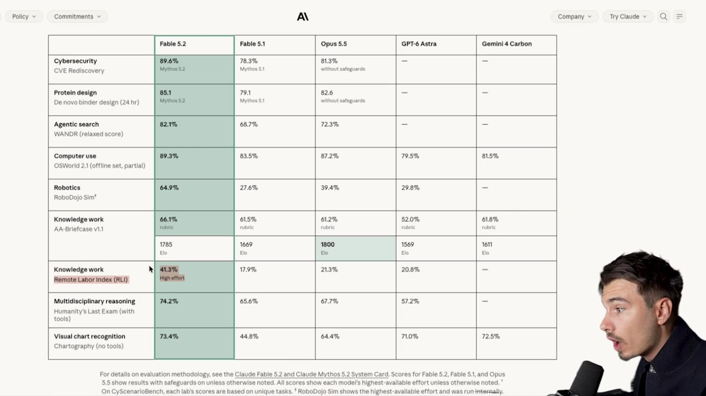
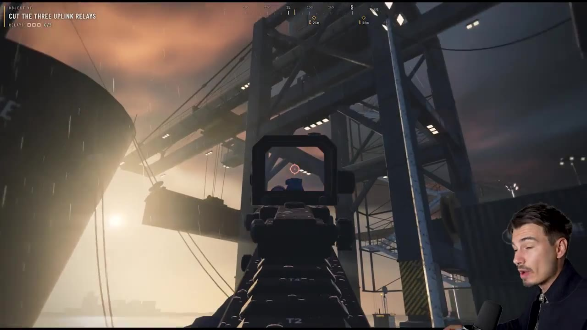
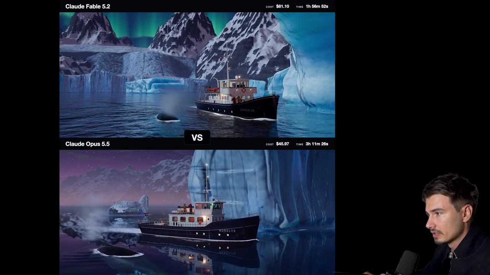
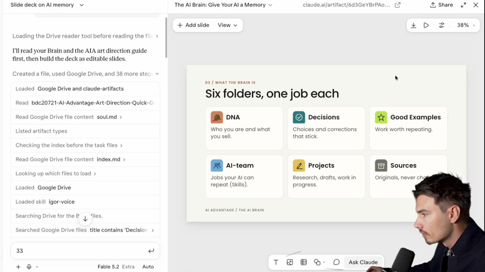
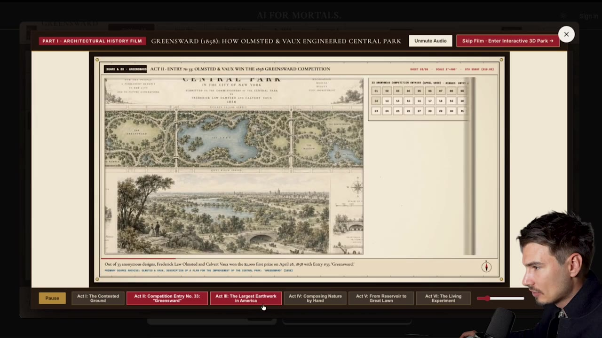
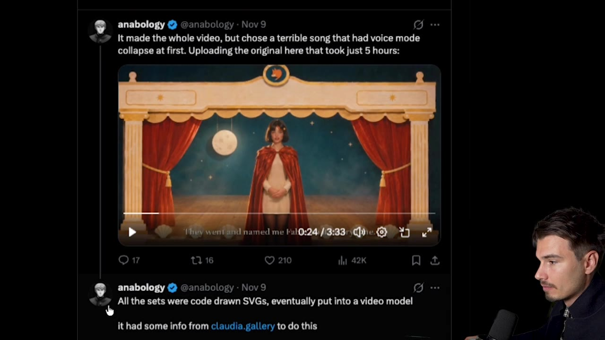

New Claude Fable 5.2 Is Insane (Yes, Again!)
▶ 원본 영상 보기한눈에 보기
- Fable 5.2는 Anthropic의 최신 모델로, 유료 Claude 플랜의 모델 전환기에서 선택하면 바로 쓸 수 있다.
- 영상 제작자는 이 모델을 3D 그래픽·슬라이드·영상 편집에서 지금까지 본 것 중 가장 뛰어나다고 평가한다.
- 벤치마크의 프리랜서 업무 과제 완료율이 Opus 5.5의 21%에서 41%로 거의 두 배가 됐다.
- 가격은 가장 비싸지만(같은 작업 비용 Opus 45달러 vs Fable 81달러), 속도는 더 빠르고 결과물 디테일이 좋다.
- 게임·교육용 인터랙티브 앱·뮤직비디오·설명 영상 등 시각적 작업에서 개선 폭이 가장 크다.
이런 분께 도움이 됩니다
- AI로 슬라이드, 교육 자료, 설명 영상을 만드는 분이 새 모델로 무엇이 가능해졌는지 알고 싶을 때.
- 발표·영업·교육에 인터랙티브 요소를 넣을 아이디어를 찾는 분.
핵심 내용
모델 접근과 성능 평가
- Fable 5.2는 유료 Claude 플랜에서 모델 전환기로 선택하면 쓸 수 있다. (0:43)
- 직전까지 영상 제작자는 Opus 5.5를 최고 모델로 꼽았고, 이제 Fable을 "새로운 왕"으로 평가한다.
- 벤치마크에서 다른 모델을 거의 압도하며, 컴퓨터 사용 능력(컴퓨터를 직접 조작해 일을 처리하는 능력)도 최고 수준이라고 한다. (1:29)
- 실제 프리랜서 업무 과제 지표에서 완료율이 Opus 5.5 21% → Fable 5.2 41%로 늘었다. (1:53)
💡 컴퓨터로 하는 지식 노동 처리 능력이 약 두 배가 됐다 — 영상 속 벤치마크 기준.

게임·3D 제작
- 웹 인터페이스에서 "아주 상세하고 높은 퀄리티의 FPS 게임을 만들어 줘"라는 간단한 프롬프트 하나로 AAA급 느낌의 FPS를 만들었다. (2:37)
- 복잡한 설정 없이 아티팩트(Claude 화면 안에서 바로 실행되는 결과물) 안에서 빌드되고 모바일에서도 작동한다.
- 스노우 글로브 비교에서 Fable이 Opus 5.5보다 객체 상호작용·물리 효과가 더 현실적이었다. 퀘이크 스타일 게임도 한 번에 만들어졌다. (4:56)
- 같은 작업에서 Opus는 45달러, Fable은 81달러가 들었고 Fable이 더 빨랐다(약 2시간). (6:25)
- Fable은 물 표현, 배경 디테일, 배와 사람의 사실감이 더 좋았다. 물 표현은 AI의 오랜 약점이었다.
- 8시간 동안 만든 게임도 일부는 일관성을 유지하는 등 길고 복잡한 프로젝트에서도 진전이 있었다.


슬라이드 제작
- 제작자가 'AI Advantage' 강의용 기억법 슬라이드를 만들었는데, 폴더 시스템 아이콘의 색상(주황·청록·네온 그린)과 순서를 이전 슬라이드 흐름 그대로 이어갔다. (3:47)
- 삽화부터 설정까지 처리했고 원하는 대로 수정할 수 있었다.
- 'extra' 설정으로 약 30분이 걸렸고 Ultra 플랜 사용량의 1.5%만 썼다. (4:30)
💡 마스터마인드 모임에서 본 어떤 AI 슬라이드보다 낫다는 것이 제작자의 평가.

교육용 인터랙티브 경험
- 와인 양조를 배우는 대화형 게임(Kieran Klaassen 제작)처럼 관심 주제를 게임으로 학습하는 앱을 만들 수 있다. (5:41)
- Pat Simmons가 만든 센트럴 파크 시각적 역사는 이미지·애니메이션·타임라인을 담은 인터랙티브 결과물이다. (6:04)
- 게시물 링크는 영상 설명란에 있다.

영상 제작·편집
- 뮤직비디오 예시는 음악은 Suno, 영상 생성은 Seed Dance, 편집·애니메이션은 Fable이 맡았다. (7:34)

- 영상 생성 모델 연결에 Higgsfield MCP(자막상 "Hicks Field")를 썼고, 나머지는 모두 Claude로 작업했다.
- 설명 영상 제작이 이 모델의 가장 강한 분야 중 하나다. After Effects 수준의 애니메이션을 만들 수 있게 됐다. (8:20)
- Opus도 애니메이션은 가능했지만 이번이 큰 발전이라고 한다.
개선이 큰 분야와 한계
따라 해보기
준비물
- 유료 Claude 플랜(영상 속 사례는 Ultra 플랜 사용). 모델 전환기에서 Fable 5.2 선택.
- 영상 제작 사례는 추가로 Suno, Seed Dance, Higgsfield MCP 필요(가격은 영상에 나오지 않음).
단계별 방법
🔁 Fable로 인터랙티브 결과물 만들기
- 모델 선택
- 프롬프트 입력
- 아티팩트 실행
- 수정 요청
2단계에 입력할 내용 (영상 예시)
나를 위한 FPS 게임을 만들어 줘, 아주 상세하고 높은 퀄리티로.
AAA급 게임과 견줄 만한 시각적 퀄리티, 규모는 작게, 놀라울 정도로 사실적인 그래픽.
(자막을 바탕으로 풀어 쓴 문장이며 원문 프롬프트와 다를 수 있음)
따라 할 수 있는지 점검
- ✅ 바로 따라 할 수 있음: 모델 선택, 간단한 프롬프트로 아티팩트 게임 만들기.
- ⚠️ 2단계 「프롬프트 입력」: 실제 프롬프트 원문이 전부 나오지 않음 → 영상 2:37 화면 확인, 위 예시로 시작해 보완.
- ⚠️ 슬라이드 제작: 어떤 프롬프트·설정으로 만들었는지 안 나옴 → 'extra' 설정(보충: 추론 강도 설정으로 추정)을 쓴 점만 확인 가능.
- ⚠️ 뮤직비디오 제작: Suno·Seed Dance·Higgsfield MCP 가입·결제 필요 여부와 연결 방법이 없음 → 설명란의 claudia.gallery/fable 페이지에서 제작 단계 확인.
- ❓ 비용: Opus 45달러·Fable 81달러가 어떤 과금 방식(API 등)인지 불분명. 플랜 사용량 1.5%와 어떻게 다른지 영상에서 설명하지 않음.
기억할 숫자·인용
- 프리랜서 업무 과제 완료율: Opus 5.5 21% → Fable 5.2 41%
- 같은 작업 비용: Opus 45달러 vs Fable 81달러(Fable이 더 빠름, 약 2시간)
- 슬라이드 제작: 약 30분, Ultra 플랜의 1.5%
- 8시간 동안 만든 게임도 일부 일관성 유지
생각해볼 점
- 영상 속 평가("최고", "비교 불가")는 제작자의 주관이다. 벤치마크와 사례 모두 공개 발표·SNS 데모라 잘 나온 결과만 골랐을 수 있다.
- 비용이 Opus의 약 1.8배라서, 간단한 작업까지 Fable을 쓸 필요가 있는지는 따져 봐야 한다.
- 일부 분야(산업 디자인 등)는 아직 부족하다고 영상도 인정한다.
바로 해볼 일
- 평소 쓰는 슬라이드나 교육 자료 하나를 Fable 5.2와 기존 모델로 각각 만들어 비교해 보기
- 내 업무·관심 주제를 설명하는 작은 인터랙티브 아티팩트를 한 번 요청해 보기
- 설명란의 Central Park, First Crush 사례 링크를 열어 구성 방식 참고하기